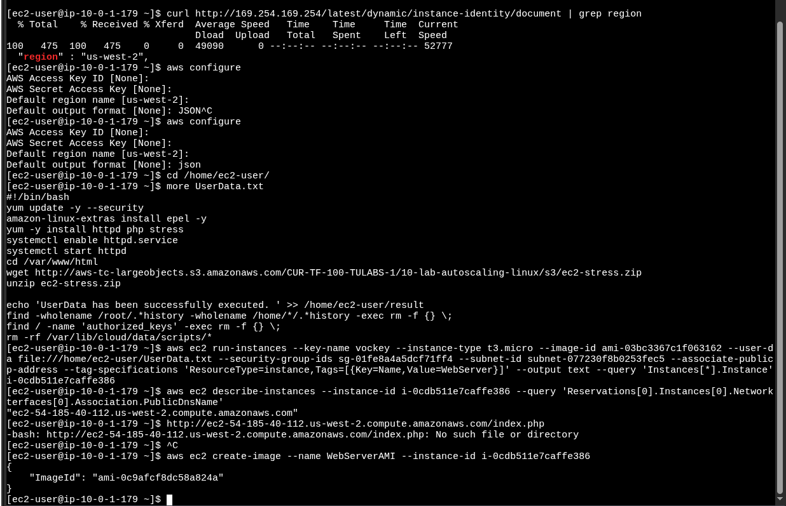
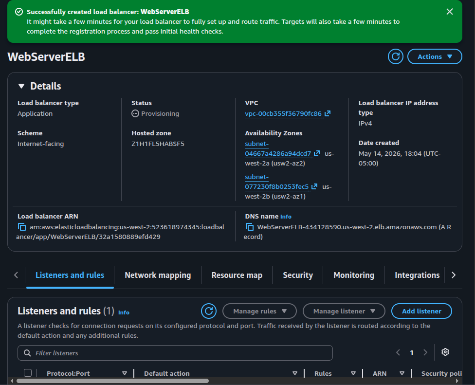
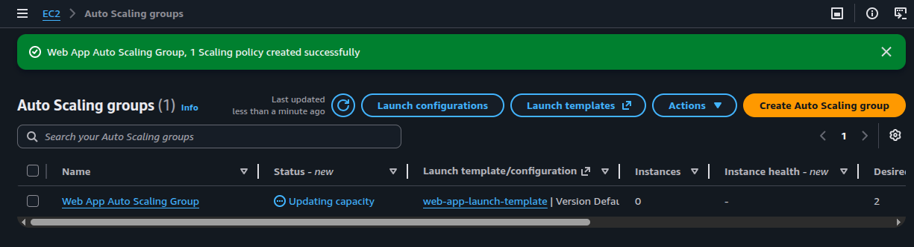
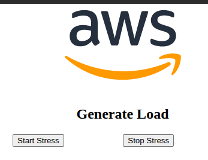

Image Pipeline (CLI)
Launch a WebServer instance with a UserData script that installs Apache + PHP + the
stress package and deploys a load-generation app, then capture it as
WebServerAMI with aws ec2 create-image.
Build a self-healing, auto-scaling web tier on EC2: bake a custom AMI from a configured web server, front it with an Application Load Balancer across two AZs, and let an Auto Scaling Group react to CPU load using a target tracking policy.
The lab mixes CLI and Console work. The custom AMI is created entirely via the AWS CLI from the Command Host. The ALB, Launch Template, and Auto Scaling Group are then wired together in the EC2 Console, and finally a PHP stress page is used to push CPU above the target tracking threshold and observe scale-out.
Launch a WebServer instance with a UserData script that installs Apache + PHP + the
stress package and deploys a load-generation app, then capture it as
WebServerAMI with aws ec2 create-image.
An internet-facing ALB in public subnets routes to an ASG of t3.micro instances in private subnets. Target tracking keeps average CPU around 50%, scaling between 2 and 4 instances.
The end state has four moving pieces, deployed in this order: an AMI, a load balancer, a launch template, and the Auto Scaling Group that ties them together.
| Layer | Resource | Role | Placement |
|---|---|---|---|
| Image | WebServerAMI |
Pre-configured Apache + PHP + stress app, baked from a running EC2 instance | Region-wide (My AMIs) |
| Edge | WebServerELB (ALB) |
Internet-facing layer-7 entry point, routes HTTP to healthy targets | Public Subnet 1 + Public Subnet 2 (2 AZs) |
| Template | web-app-launch-template |
Blueprint each new instance is launched from (AMI + instance type + SG) | Used by ASG |
| Fleet | Web App Auto Scaling Group |
Maintains 2–4 instances, replaces unhealthy ones, reacts to CPU | Private Subnet 1 + Private Subnet 2 (2 AZs) |
| Target group | webserver-app |
Health-checks /index.php and tells the ALB which instances are reachable |
Same VPC as the ALB |
| Signal | Target tracking policy | Average CPU @ 50% → triggers scale-out / scale-in via CloudWatch | Attached to ASG |
Four tasks: build the AMI from the CLI, create the ALB, define the Launch Template and the ASG, then drive load through the page served by the ALB.
Working from the Command Host. The Vocareum lab provides AWS credentials via an IAM role on the
host itself, so aws configure only sets region and output format — no access keys.
curl http://169.254.169.254/latest/dynamic/instance-identity/document | grep region
→ us-west-2.aws configure and accepted defaults for region (us-west-2) and
output (json); access keys were left blank intentionally.UserData.txt with more to understand exactly what would
be baked into the AMI before launching the instance.#!/bin/bash
yum update -y --security
amazon-linux-extras install epel -y
yum -y install httpd php stress
systemctl enable httpd.service
systemctl start httpd
cd /var/www/html
wget http://aws-tc-largeobjects.s3.amazonaws.com/CUR-TF-100-TULABS-1/10-lab-autoscaling-linux/s3/ec2-stress.zip
unzip ec2-stress.zip
echo 'UserData has been successfully executed.' >> /home/ec2-user/result
find -wholename /root/.*history -wholename /home/*/.*history -exec rm -f {} \;
find / -name 'authorized_keys' -exec rm -f {} \;
rm -rf /var/lib/cloud/data/scripts/*
The last three lines matter: they wipe shell history and any stray authorized_keys
before the AMI is captured, so the image is not contaminated with the original instance's
credentials or identity.
# Launch the WebServer instance with UserData, tag, and public IP
aws ec2 run-instances \
--key-name vockey --instance-type t3.micro --image-id ami-03bc3367c1f063162 \
--user-data file:///home/ec2-user/UserData.txt \
--security-group-ids sg-01fe8a4a5dcf71ff4 \
--subnet-id subnet-077230f8b0253fec5 \
--associate-public-ip-address \
--tag-specifications 'ResourceType=instance,Tags=[{Key=Name,Value=WebServer}]' \
--output text --query 'Instances[*].InstanceId'
# → i-0cdb511e7caffe386
# Resolve its public DNS once the instance reports the network interface
aws ec2 describe-instances --instance-id i-0cdb511e7caffe386 \
--query 'Reservations[0].Instances[0].NetworkInterfaces[0].Association.PublicDnsName'
# → "ec2-54-185-40-112.us-west-2.compute.amazonaws.com"
# Capture the running instance as a custom AMI (reboots by default for FS integrity)
aws ec2 create-image --name WebServerAMI --instance-id i-0cdb511e7caffe386
# → { "ImageId": "ami-0c9afcf8dc58a824a" }
run-instances with aws ec2 wait instance-running --instance-ids <ID>
so the next command only runs once the instance is actually up. The lab works fine without it
interactively, but the pattern is worth keeping.

aws configure,
UserData.txt inspection, run-instances,
describe-instances, and create-image returning
ami-0c9afcf8dc58a824aCreated from the EC2 Console under Load Balancers. Picked Application Load Balancer because the workload is HTTP and benefits from layer-7 routing and health checks per path.
HTTPAccess (not default)webserver-app/index.php
WebServerELB immediately after creation:
Provisioning, internet-facing, spanning two AZs (usw2-az1 and
usw2-az2), DNS name visible/index.php. Hitting the DNS name before that returns a 503 — expected behavior, not
a misconfiguration.
Two console resources here. The Launch Template is the immutable blueprint for new instances; the ASG is the controller that uses it to keep the right number of instances alive.
WebServerAMI (My AMIs)HTTPAccessweb-app-launch-template (Default version)webserver-appName = WebApp (propagated to instances)
web-app-launch-template,
success banner "1 Scaling policy created successfully"
With targets reporting healthy, the ALB's DNS name serves the bundled PHP page that exposes
two buttons — Start Stress and Stop Stress — wired to the
stress command on the instance that handled the request.

Start Stress launches the stress binary on whichever instance
answered the request, pushing its CPU to ~100%. CloudWatch averages CPU across the ASG; once
the average crosses 50% for the cooldown window, the target tracking policy adds new instances
up to max=4. Stopping the stress brings the average back down and the ASG scales
back to desired=2.
aws ec2 create-image from a
running, UserData-configured instance.authorized_keys before
create-image so the AMI does not leak the source instance's identity.The lab connects four services into one elastic web tier. The AMI removes per-boot configuration work, the Launch Template makes that AMI reproducible, the ASG decides how many copies should run, and the ALB hides the moving fleet behind one stable DNS name.
The target tracking policy is the part that closes the loop: CloudWatch observes the fleet, compares it to the 50% CPU target, and signals the ASG to launch or terminate instances automatically. The web tier reacts to load instead of being sized for the worst case, which is the operational reason Auto Scaling exists in the first place.